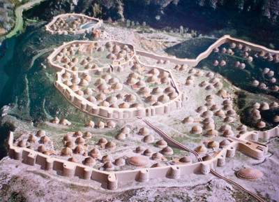
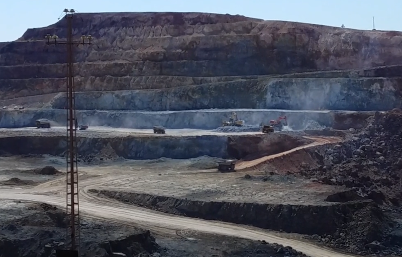
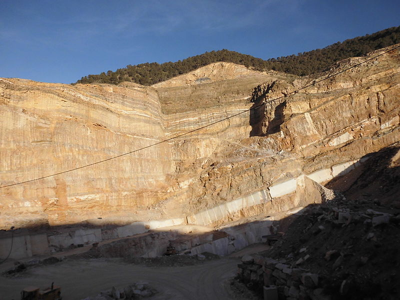

Desde la antigüedad, ha estado siempre presente la riqueza de los recursos geológicos de Andalucía. Las civilizaciones de Los Millares , que se extendió por Andalucía oriental y el Levante, o la de Tartessos , que se desarrolló en el triángulo formado por las actuales provincias de Huelva, Sevilla y Cádiz, se convirtieron en focos de interés de los pueblos mediterráneos, por su importancia en los recursos mineros.
 |
| Los Millares. Recreación Imagen de J.M. Yuste en Wikimedia commons bajo licencia CC |
El papel de Andalucía en el desarrollo del comercio de materias primas, sobre todo a partir de la Revolución Industrial del siglo XIX, ha sido de proveedora de materias primas, sin obtener el beneficio de un desarrollo de una industria metalúrgica . La explotación de los recursos mineros no redundó en la creación de una economía local que pudiera aprovecharse de estas extracciones.
En la actualidad, la demanda de metales por parte de economías emergentes como la de China e India ha propiciado que se reabran las antiguas minas de las provincias de Huelva, Sevilla y Granada, tales como Riotinto o Alquife, o que busquen nuevos yacimientos, tales como los de Las Cruces o Masa Valverde.
Minería
Hay que destacar en primer lugar la provincia de Huelva, donde se genera el 40 por ciento del valor total de las extracciones en Andalucía, fundamentalmente a las explotaciones de la franja pirítica (para obtener el hierro) y, en menor medida, las provincias de Córdoba (carbón de la cuenca del Guadiato), Sevilla (metales de Aznalcóllar) y Granada (hierro de Alquife).
 |
| Cerro Colorado (Huelva) Imagen de Bucyrus en Wikimedia commons bajo licencia CC |
En el caso de las rocas industriales (calizas, arcillas y otros materiales utilizados en la construcción) presentan una distribución muy repartida por todo el territorio andaluz.
Transformación de los minerales
En la actualidad, pese a que existe una mayor integración entre la extracción minera y la transformación industrial, no se ha alcanzado una situación estable de la que se pueda obtener un beneficio que redunde en mejoras notables de las economías de cada zona.
A continuación se presenta una relación de las distintas industrias ligadas a la explotación de los recursos geológicos:
- Metales: Huelva y , en mucha menor medida, Linares (Jaén) tienen industrias ligadas a la transformación metálica.
- Química: Huelva presenta un número importante de empresas dedicadas a la fabricación de ácido sulfúrico. También se encuentran en Sevilla y Granada, aunque en menor cantidad.
- Cemento: Andalucía es una de las grandes productoras y la distribución de las factorías es muy dispersa: Niebla, Jerez, Málaga, Córdoba, Alcalá de Guadaíra, Almería y Carboneras.
- Cerámica: principalmente concentrada en La Rambla (Córdoba) y Bailén (Jaén).
- Vidrio: Jerez concentra la fabricación de vidrio a través de la transformación de arenas silíceas.
- Mármol: los mármoles de Macael son los más abundantes.
 |
| Cantera de mármol en Macael (Almería) Imagen de ANESTRELLA en Wikimedia commons bajo licencia CC |